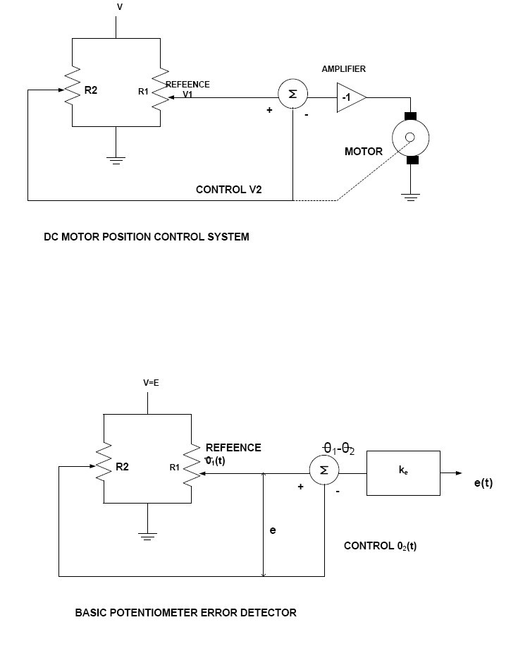

To study characteristics of positional error detector by angular displacement of two servo potentiometers.
1. Experimental kit.
2. Dual Trace CRO.
The potentiometers are electromechanical devices contains reluctance and a wiper arrangement for variation in resistance due to displacement. Generally, all potentiometers have three terminals. The reference dc or ac is applied to fixed ends and the variable is taken from wiper terminals. When the position of wiper is shifted to other position a prepositional change in voltage occurs as the O/P voltage.
e (t)=Keθ (t)
Where Ke is the proportionality constant
Which is equal to reference applied V / Angular span (rad)max and θ(t) is the shaft positions. The potentiometer error detector consists of two identical potentiometers electrically connected in parallel and supplied by a voltage source.
Assume R1 as reference shaft and kept at θ1 and O/P voltage taken as reference V1, than the R2 voltage taken from wiper will be V2 .The O/P compared between two wiper may expressed as: -
V1 – V2 = e (t) = Ke θ1 (t) – θ2 (t) = Ke θe(t)
e (t) is known as error voltage.
For ac excitation signal system is same .The I/P ac signal which is pronounced as carrier may be
represented as
V(t) = Vsin ωct, Where θe is the angular error between reference and control potentiometer.
It may be observed that θe changes its sign when there is 1800 phase shift occurs in e(t) as
sinusoidal error.
θe (t) = sin ωst
There error e(t) may be represented as,
e(t) = 1/2 KsV [cos(ωc - ωs)t]
When this signal is fed through a balanced demodulator it produce a phase sensitive signal, which can be applied to controlled variable (motor).
Sockets at Pot – 1, and Pot – 2, wiper are provided to connect external DVM.
1.Switch on the power. Select excitation switch to DC.
2.Keep pot – 1, to formulaeter of its travel i.e. 180°= θ1
3.Connect provided DVM with the error output.
4. Turn pot – 2, from 20° to 340p in regular steps, say 20° interval and note the displacement in θ2 and output voltage e, as Vo.
5. Tabulate the observations. Plot graph between Vo and θ2, for straight-line approximation.
Calculate the slope of the line as,
Slope of the line Ko = ΔVo / Δθe ---------- in V/θ°
6 Repeat above steps keeping pot–2 at fixed degree and move pot– 1.
The potentiometers are excited from built in ac sinusoidal source of fixed amplitude (carrier) and error output is then fed into balanced demodulator, which gives phase sensitive dc signal. Other apparatus required is a dual trace CRO.
1. Switch on the power. Select ac from the excitation switch.
2. Connect one of the CRO input with the carrier output socket and ground socket. Adjust vertical and horizontal deflection of CRO to obtain 2.5 div amplitude with two or more traces (vertical 2V /div and horizontal 0.5 mS/div).
3. Connect other input of CRO with the error output socket.
4. Keep pot – 1, fixed at 180°.
5. Move pot – 2, to either side and observe the error output signal phase, and its amplitude.
6. Connect error output with the balanced demodulator input. Connect DVM input with the demodulator output.
7. Move pot – 2, from 20° to 340° in steps of 20° and note the displacement in θ° and demodulator output in volts Vdm.
8. Plot graph from the results.

1) Read operating manual before working on the kit.
2) Don’t change the connection without switching off the supply of the experiment kit.
3) Draw the traces from CRO properly.
4) Keep the connecting lead and ancillary equipment at proper place after completing the experiment.
5) Do not temper with the control and switches of equipment.
1) State the principle of potentiometer.
2) Define sensitivity of potentiometer.
3) Define resolution of potentiometer.
4) Describe how potentiometer acts as a transducer.
5) What is the difference between displacement measured by potentiometer and LVDT?
6) On what factors, does the resolution of potentiometer depend?
7) How resolution can be increased in displacement measurement using potentiometer?
8) What are the limitations of the potentiometer?
Potentiometers are used to control electrical devices such as volume controls on audio equipment. It is also used in a variety of rotary feedback and position indicating circuits. Potentiometers are rarely used to directly control significant power (more than a watt). It operated by a mechanism can be used as position transducers, for example, in a joystick.